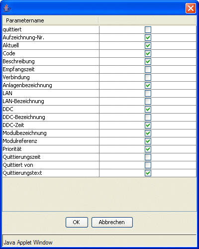

Sie können festlegen, welche Spalten in der Alarmhistorie und in der Liste der eingehenden Alarme angezeigt werden.
So definieren Sie die anzuzeigenden Spalten:
1 Rufen Sie entweder Eingehende Alarme oder die Alarmhistorie auf, wie in den Abschnitten „Eingehende Alarme anzeigen" bzw. „Alarmhistorie" in dieser Anleitung beschriebenl.
2 Klicken Sie auf Einstellungen. Daraufhin erscheint ein Dialogfeld.

3 Markieren Sie die Auswahlfelder neben dem Spaltennamen, um festzulegen, welche Spalten angezeigt werden sollen.
4 Klicken Sie auf OK.
Beachten Sie, dass diese Funktion nur verfügbar ist, wenn man auf den 963 Server im Grafikmodus zugreift.